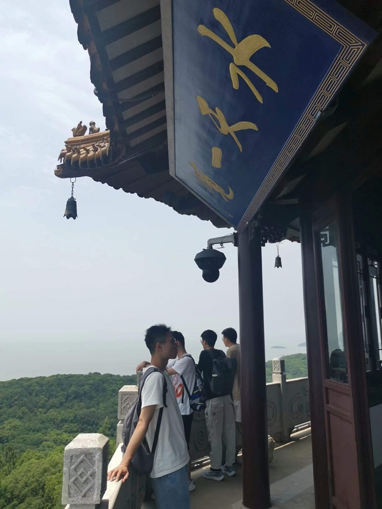

Chenyu Zheng (郑晨宇)Ph.D. Student
Gaoling School of Artificial Intelligence |
 |
I am a first-year Ph.D. student at the Gaoling School of Artificial Intelligence, Renmin University of China, advised by Prof. Chongxuan Li fortunately. Before that, I received my B.E. degree from the School of Computer Science, Wuhan University in June, 2023. I am grateful to Prof. Weiwei Liu for cultivating my theoretical foundation during my undergraduate studies.
The long-term goal of my research is to build a trustworthy and efficient learning machine. To this end, my research focuses on understanding and improving modern learning algorithms. Currently, I am interested in deep learning theory (optimization and generalization) and its applications (e.g., deep generative models).
I am open for possible collaborations. Please feel free to drop me an email if there is any suitable ideas or opportunities to discuss.
Research Intern, Ant Group, Beijing, China (2023.10 - Present) Mentor: Dr. Xiaolu Zhang
Research Intern, RSIDEA Group, LIESMARS, Wuhan, China (2021.01 - 2022.08) Advisors: Ph.D. candidate Junjue Wang and Prof. Ailong Ma